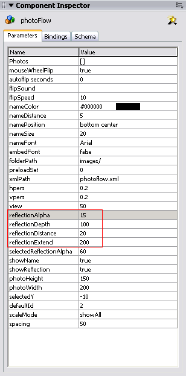
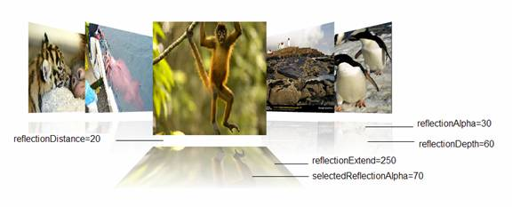

The appearance of the reflection can be changed by editing the following parameters in the Component Inspector:
reflectionAlpha: Opacity of the reflection.
reflectionDepth: Depth of reflection. Available value range is 1~255.
reflectionDistance: Distance between reflections and images.
reflectionExtend: The amount (in pixels) to extend the reflection.
selectedReflectionAlpha: Opacity of the refelection of the selected slide.


The example above shows the default value of the reflection parameters.